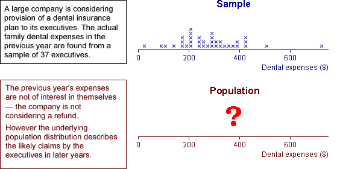

Inference about a population
Data are usually collected to provide information about some population or process underlying the data. The data are often modelled as a random sample from this population.

More generally, inference is applicable to any situation where data are obtained through a random mechanism. We may understand some aspects of the process that generated the data (our model for the data-collection process), but other aspects of this process must usually be estimated from data that have been collected — inference.